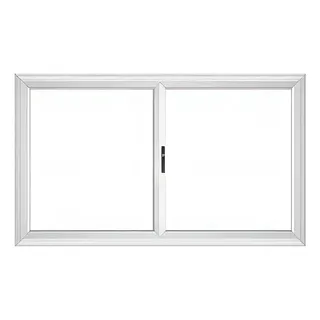
Ventana corrediza
Práctica y sin ocupar espacio.

Perfilería VEKA Clase A con DVH fabricado en nuestra planta.
Menos horas de calefacción y aire.
La opción que más corta el ruido de la calle.
Fabricado en nuestra planta.
Foliados de fábrica: no se pintan ni se descascaran.
Tocá cada punto.
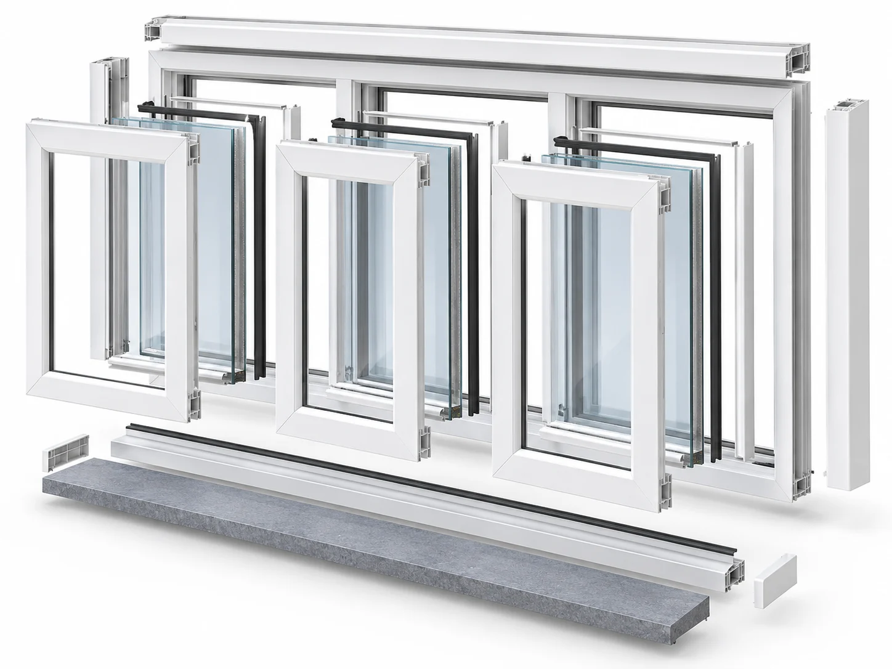

Práctica y sin ocupar espacio.
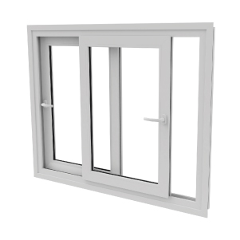
Para vanos anchos.
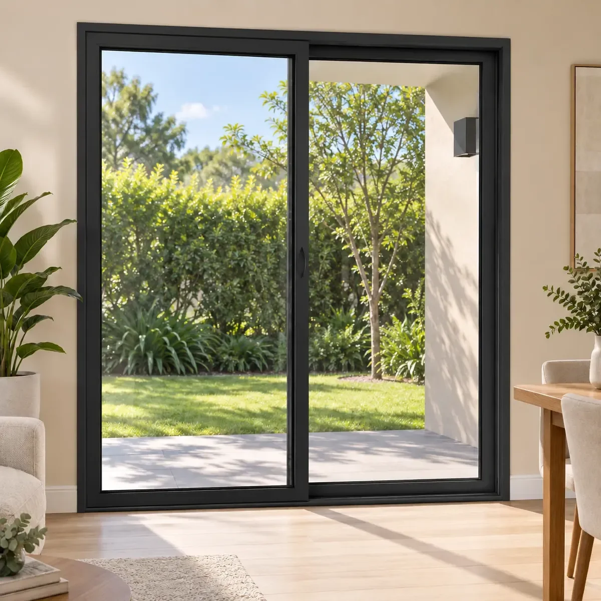
Hacia galerías, patios y balcones.
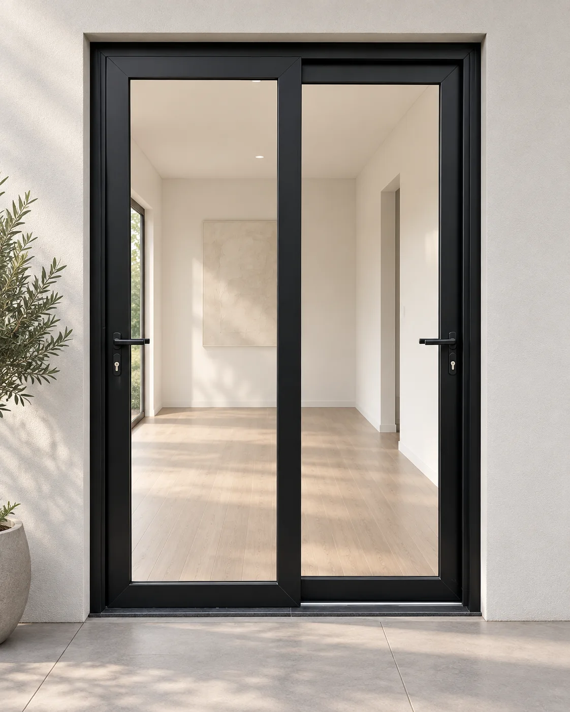
Dos hojas batientes.
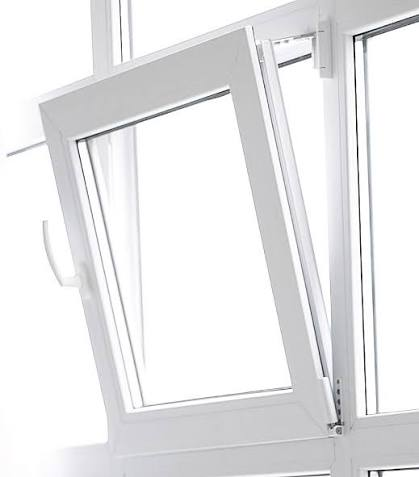
Ventila inclinada o abre por completo.
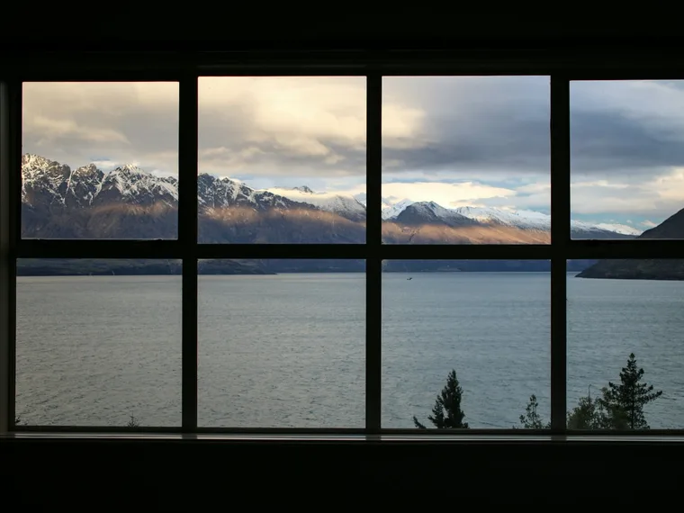
Más luz, sin hojas móviles.
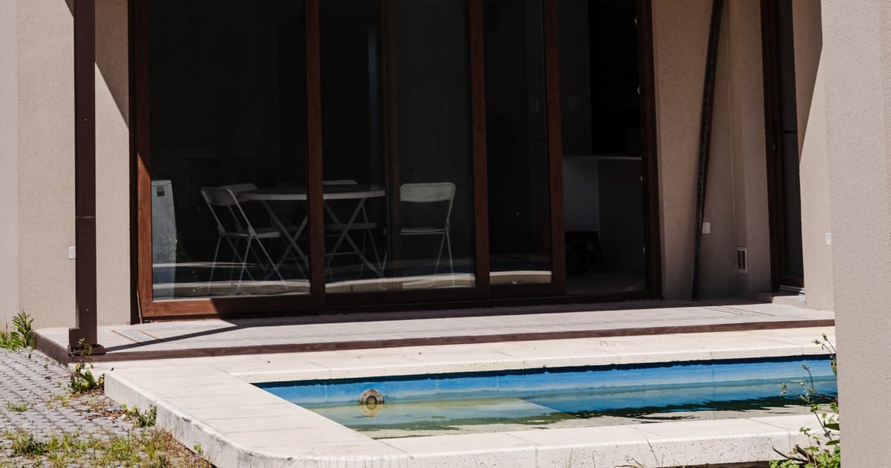
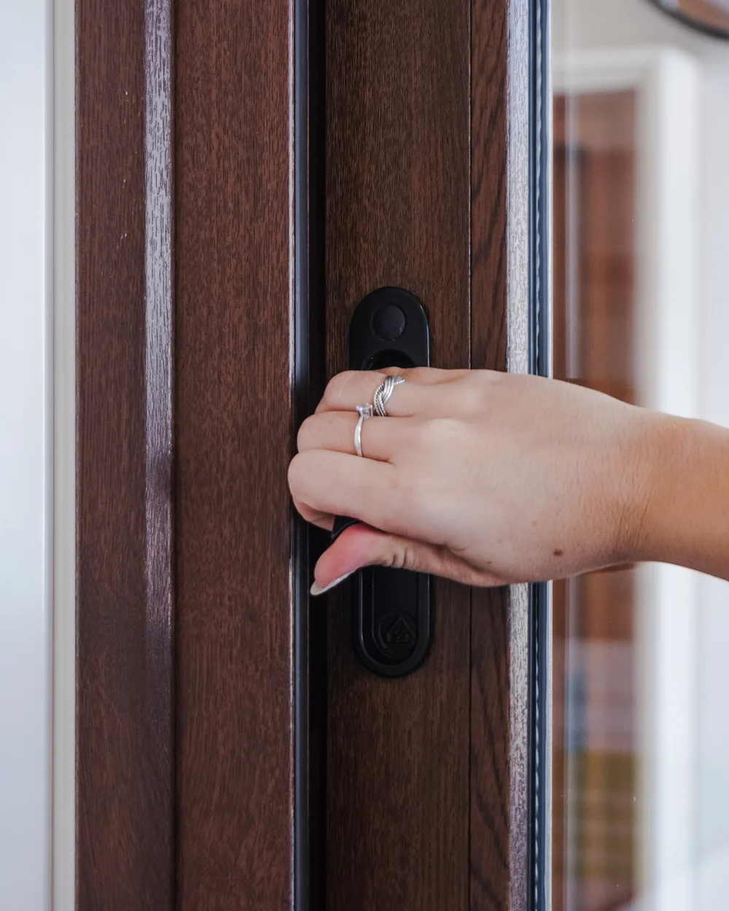
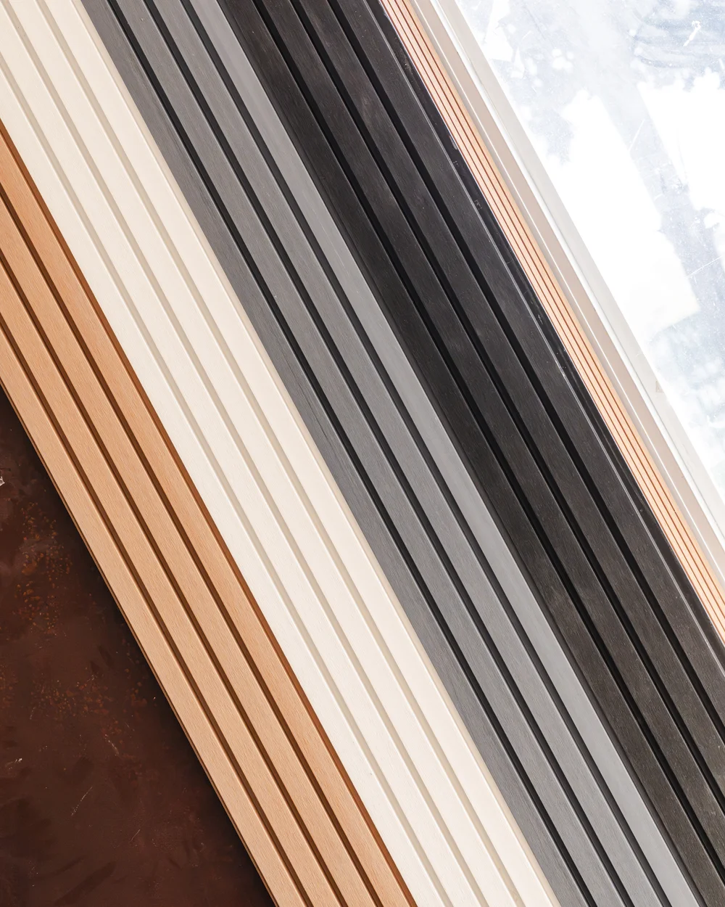
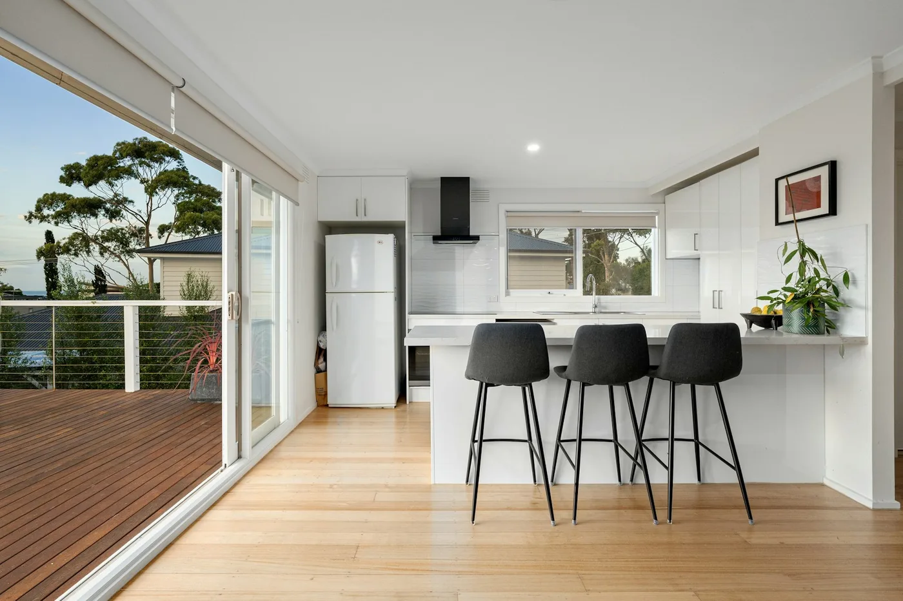
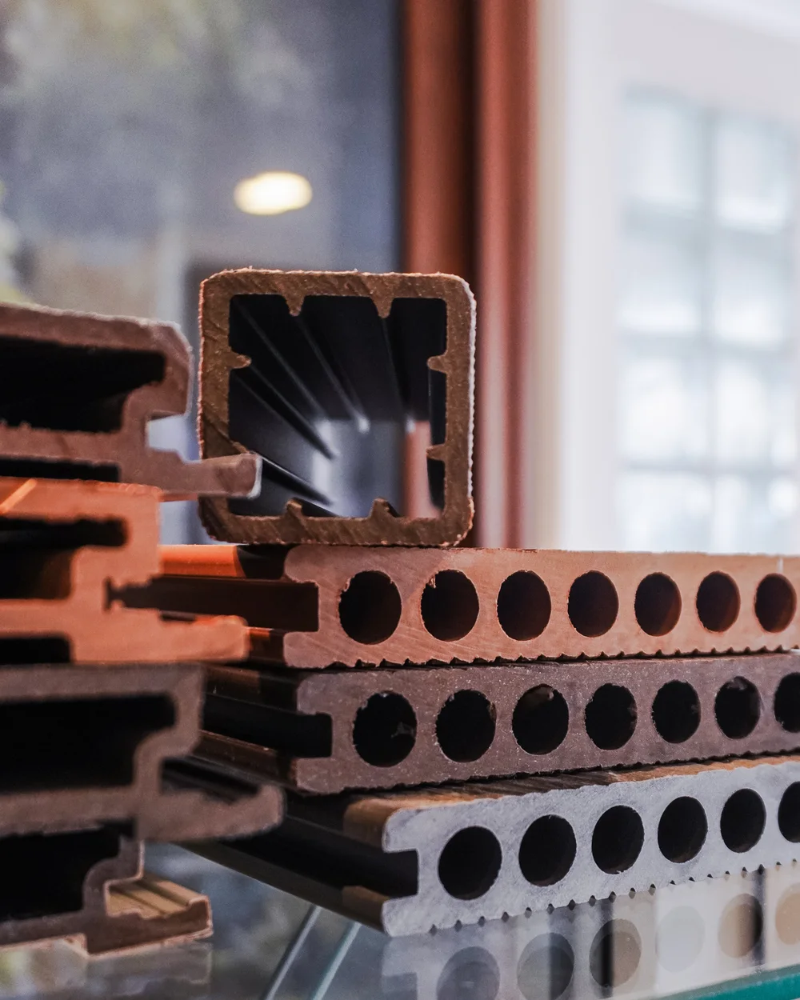
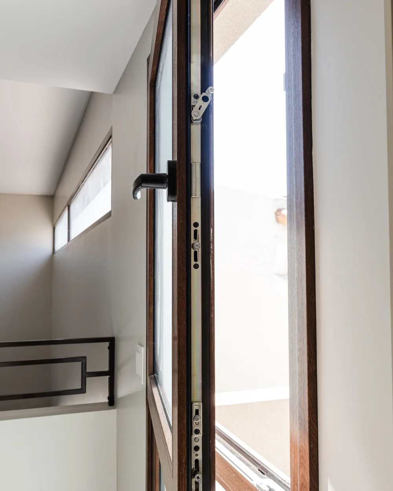
VEKA Clase A. Estamos capacitados por VEKA para fabricar e instalar sus sistemas.
Blanco, roble dorado, nogal y VEKA Spectral, un foliado ultramate, sedoso al tacto y sin reflejos.
Sí. Fabricamos el doble vidriado hermético en nuestra planta, junto con la ventana.
El PVC aísla mejor y es la opción para quien busca confort térmico y acústico. El aluminio permite perfiles más finos y paños más grandes. En la consulta te decimos cuál conviene para tu caso.
Medimos tus vanos y fabricamos tus aberturas de PVC en nuestra planta de La Plata.